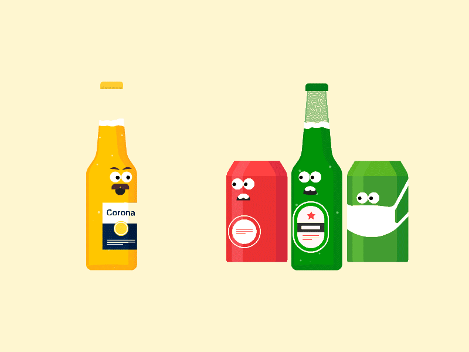

Socail distancing | about us | products
COVID-19 spreads mainly among people who are in close contact (within about 6 feet) for a prolonged period. Spread happens when an infected person coughs, sneezes, or talks, and droplets from their mouth or nose are launched into the air and land in the mouths or noses of people nearby. The droplets can also be inhaled into the lungs. Recent studies indicate that people who are infected but do not have symptoms likely also play a role in the spread of COVID-19.
It may be possible that a person can get COVID-19 by touching a surface or object that has the virus on it and then touching their own mouth, nose, or eyes. However, this is not thought to be the main way the virus spreads. COVID-19 can live for hours or days on a surface, depending on factors such as sun light and humidity. Social distancing helps limit contact with infected people and contaminated surfaces. Although the risk of severe illness may be different for everyone, anyone can get and spread COVID-19. Everyone has a role to play in slowing the spread and protecting themselves, their family, and their community.
It may be possible that a person can get COVID-19 by touching a surface or object that has the virus on it and then touching their own mouth, nose, or eyes. However, this is not thought to be the main way the virus spreads. COVID-19 can live for hours or days on a surface, depending on factors such as sunlight, humidity, and the type of surface. Social distancing helps limit opportunities to come in contact with contaminated surfaces and infected people outside the home.
Follow guidance from authorities where you live. If you need to shop for food or medicine at the grocery store or pharmacy, stay at least 6 feet away from others. Also consider other options
Stay connected while staying away. It is very important to stay in touch with friends and family that don’t live in your home. Call, video chat, or stay connected using social media. Everyone reacts differently to stressful situations and having to socially distance yourself from someone you love can be difficult.